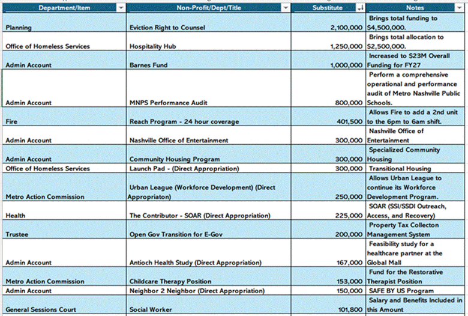
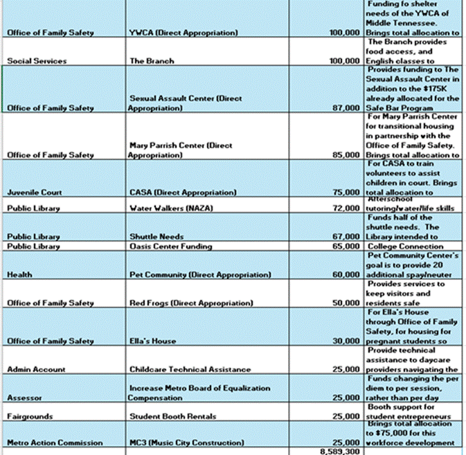
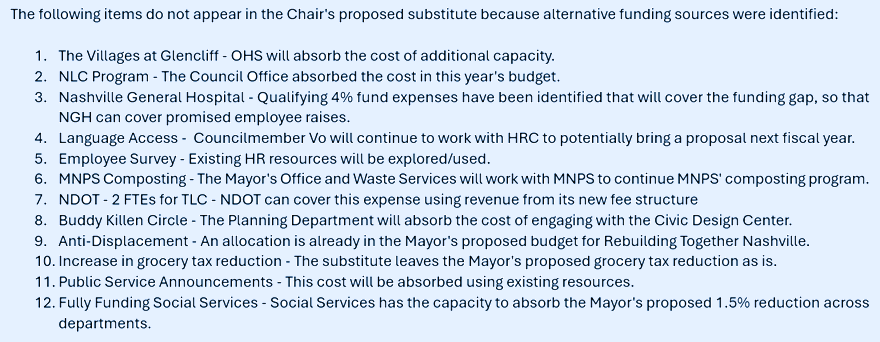
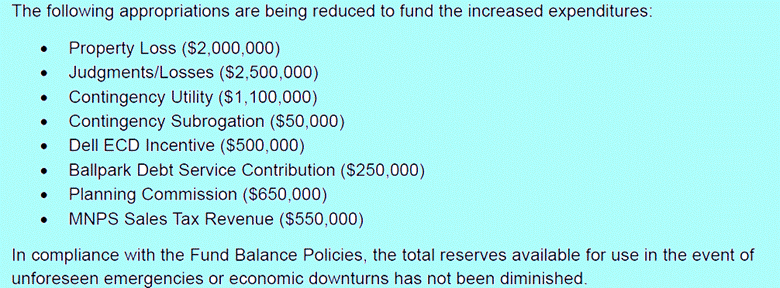
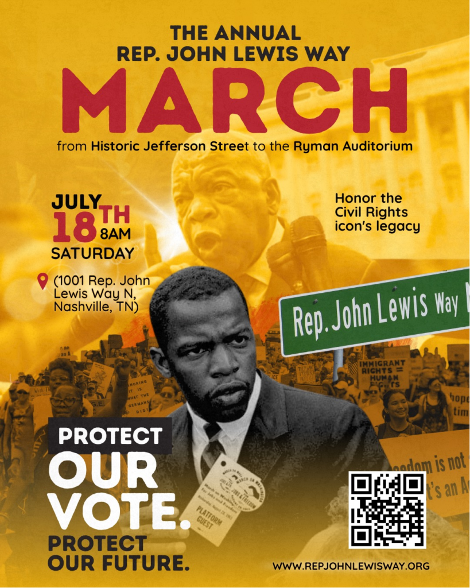

FY27 Budget Conversations – Chair Toombs Substitute Budget
Happy Father’s Day to all the fathers and father figures out there!!!
Thank you so much for taking the time to read this post. As your Council Member At-Large, one of my most important responsibilities is keeping you informed, not just about the decisions being made at Metro Council, but about the process behind those decisions, the people driving them, and the real-world impact they have on your daily lives. Nashville is a city on the move, and the way we allocate our public dollars says everything about our values, our priorities, and our vision for the future.
This past week, I had an in-depth conversation with Council Member Kyonzté Toombs, who serves as Budget Chair, to review the FY 2027 substitute budget that she presented to Metro Council. I walked away from that meeting genuinely impressed by the thoughtfulness, strategy, and community-centeredness behind every line item.
Understanding the Budget Process: It Starts Before the Vote
Before we talk about what’s in the budget, it’s worth understanding how it gets made.
Every year, the Mayor’s proposed budget is due by May 1st. That gives the mayor’s office months to prepare, analyze, and negotiate before the public ever hears a word. By contrast, the Metro Council receives that proposal and then must respond through hearings, work sessions, and collaborative deliberation, in a compressed window of time. That asymmetry creates real pressure on council members who want to be thoughtful and thorough rather than reactive. The substitute budget was built from the ground up, drawing on input from department heads, outside stakeholders, community organizations, and fellow council members, ultimately arriving at a package totaling $8,589,300 in new and redirected funding.
What I appreciated the most during our conversation was how collaborative the process was. Budget work sessions weren’t just internal council debates, they included the people who actually run these programs, the directors who know what’s working and what isn’t, and the advocates who have been on the ground serving Nashville residents year after year. That kind of transparency and inclusivity in the budgeting process is exactly what good governance looks like, and I want to acknowledge CM Kyonzté Toombs for her leadership
What’s in the Substitute Budget?
Now let’s get into the substance. The FY 2027 substitute budget totals $8,589,300, and it is packed with initiatives that reflect our community’s most pressing needs.


Here is a closer look at the major investments:
Office of Homeless Services — $1.25 Million: Homelessness is one of the most visible and complex challenges facing Nashville. This funding supports the Office of Homeless Services in expanding and sustaining programs that connect unhoused residents with shelter, services, and pathways to permanent housing.
Barnes Fund — $1 Million Additional: The Barnes Fund is a critical tool for supporting affordable housing in Nashville. Total funding of $23 million this cycle demonstrates our ongoing commitment to keeping Nashville affordable for working families, seniors, and anyone who might otherwise be priced out of our growing city. Housing affordability is not a niche issue. It is the foundation upon which everything else in a family’s life is built.
REACH Program Expansion — $401,500: The REACH program represents our investment in mental health crisis response and community-based support services. Expanding this program with $401,500 means more capacity to reach residents in need. Whether they’re experiencing a mental health crisis, struggling with substance use, or simply falling through the cracks of a system that wasn’t built with them in mind. Every dollar here is a dollar invested in a more compassionate, more effective approach to public safety and community wellbeing.
Eviction Right to Counsel — $2.1 Million: This is one of the largest and most impactful line items in the entire substitute budget, and for good reason. With the addition of $2.1 Million in the substitute budget, bringing total Eviction Right to Counsel (ERTC), funding to $4.5 Million, Nashville has made its strongest commitment yet to protecting families from the devastating impacts of eviction. This investment recognizes what we have long known: eviction is not just a housing issue, but a crisis that touches health, education, and economic stability. Ensuring that tenants have legal representation is one of the most effective tools we have to keep families housed.
Eviction Right to Counsel is now Codified
While this is technically not part of the budget, it was worth sharing that at last Tuesday the council also voted to codify the Eviction Right to Counsel program. And now, with ERTC officially codified, that commitment is permanent. As the program’s earliest and most persistent champion, this milestone carries deep personal meaning for me. For five years, ERTC has been my baby — a program I have nurtured, defended, and fought for — and knowing it will continue serving Nashville families long after my time on Council is one of the greatest honors of my public service.
This achievement is the result of extraordinary collaboration. Early partners brought the idea forward in 2020, and researchers at Vanderbilt Peabody provided the data that strengthened our case. I am deeply grateful to the ERTC Coalition partners: Legal Aid, the Hispanic Bar Association, AMAC, Rooftop, and the Nashville Conflict Resolution Center, whose work shaped the PILOT and built a coalition that has helped thousands of residents and saved the city millions. Advocates elevated ERTC this year and fought hard for expanded funding. And our government partners and city leadership ensured the program had the structure, support, and resources needed to succeed.
Codifying and substantially funding ERTC stands as one of the proudest accomplishments of my tenure. It will continue safeguarding Nashville families for years to come, and I am grateful to have helped bring it to life.
Smart Budgeting: Finding Dollars Without Spending New Ones
Several items that were on council members’ wish lists were ultimately funded through alternative means.
Take the Villages at Glencliff project – one of my wishlist items😊. There was a $237,000 funding gap that could have required a new line item in the substitute budget. Instead, Chair Toombs worked with OHS Director April Calvin to identify existing budget capacity that could cover those costs as the medical respite beds are utilized. The result? The project moves forward without adding new spending pressure to the budget. That’s innovative, responsible governance.
Similarly, the National League of Cities program (another of my wishlist items), originally estimated at $30,000, was scaled back to $10,000 and absorbed into the council office’s existing budget. The Nashville General Hospital $4.3 million funding gap was addressed through 4% funding allocation rather than a new appropriation. NDOT covered the costs for two Transportation Licensing Commission positions internally. The Civic Design Center absorbed costs for the Buddy Killin’ Circle project. An employee survey was handled using existing human resources. Even the MNPS composting program is being advanced through a collaboration between the mayor’s office, MNPS and Waste Services.
Each of these decisions reflects a governing philosophy I deeply admire: exhaust every creative option before asking taxpayers for more. It also speaks to the importance of strong relationships between council members and department heads. A relationships built on trust, communication, and a shared commitment to outcomes over bureaucratic convenience.

Addressing Questions and Concerns: Q & A
Why wasn’t the grocery tax reduction increased beyond $9.2 million?
This was one of the questions I pressed CM Toombs on, because I know it matters to residents who are feeling the squeeze of rising food costs. The grocery tax reduction currently saves Nashville households approximately $72 per year. While I understand that might not sound life-changing, Kyonzte made a compelling case for why it matters. In a high-cost moment, when families are stretching every dollar, $72 is groceries for a week. It’s a utility bill. It’s a co-pay. And critically, this reduction applies to everyone — it is one of the most universally distributed benefits in our budget.
The honest answer to why it wasn’t increased further is financial constraint. The substitute budget process operates within real fiscal limits, and $9.2 million dedicated to the grocery tax reduction represents a significant and deliberate choice. Kyonzte also noted that there may be a path to phasing out the local portion of the grocery tax entirely over time, which would represent a meaningful long-term win for Nashville families. This is a conversation I intend to keep pushing forward.
Why is the Council spending $800,000 on a performance audit of MNPS?
The Council’s decision to allocate $800,000 for a performance audit of MNPS is not an indictment of the district. In fact, MNPS is having one of its strongest years in terms of academic performance. As I’ve written before, understanding the MNPS budget is essential, especially because Nashville funds more than 70% of the district’s operating budget, and schools make up roughly 37% of the entire Metro budget. Given that level of investment, several council members have asked for a deeper look into how the system operates. Not because something is wrong, but because they want more information and oversight.
It’s also important to note that MNPS already undergoes regular oversight. The district receives an annual financial statement audit, and Metro Internal Audit conducts targeted reviews. This includes a recent audit of the bathroom renovation project, which resulted in no findings.
The $800,000 performance audit will be conducted in partnership with an external education expert and Metro Internal Audit. MNPS is responsible for $550,000 of the total cost, which will be covered through a planned reduction in the district’s FY27 budget appropriation. This approach ensures transparency and accountability while recognizing the strong work MNPS is already doing.
How can we be sure General Hospital employees actually receive their raises?
This question is very important to me. Not only does Nashville General Hospital serves some of our most vulnerable residents, and the people who work there (nurses, support staff, administrators). Every metro union this year via their solidarity budget, all advocated for Metro General staff to get a raise this year. Since other employees were selfless in advocating for General and not themselves, it was important to make sure metro general employees get this raise.
I pressed Kyonzte on this point: after the $4.3 million funding gap was addressed through 4% funding and the budget includes resources for a 5% salary increase for FY 2027 plus a 2% retroactive lump sum for FY 2026, how do we ensure that money actually reaches the workers?
Kyonzte was clear: Nashville General’s leadership has explicitly committed to implementing these raises and lump sum payments starting July 1st. That commitment is on record. But I want to be equally clear: I will be watching. Monitoring the implementation of these compensation increases is something I take personally, because these workers deserve every penny — and then some. I will be following up to make sure the funds are used exactly as communicated.
Were there cuts to departments budget or services to fund these changes?
Except for MNPS, most of the funds for the substitute came from contingencies accounts such as judgement and losses. These accounts are estimates since we don’t know how much claim we will have. MNPS is asked to fund part of the cost of the proposed audit.

What This Budget Says About Nashville’s Values
Zoom out for a moment, and look at what this substitute budget says about us as a city. We are investing in keeping people housed. We are investing in the health and dignity of our unhoused neighbors. We are investing in affordable housing, mental health, childcare, and the workers at our public hospital. We are asking hard accountability questions about our schools. And we are doing all of this while being financially creative and responsible.
That is not a budget built around politics or optics. That is a budget built around people. And that’s the kind of governing I came to Metro Council to do.
I also want to reflect on something Kyonzte said that stuck with me throughout our conversation: every single dollar amount in this substitute budget was deliberate. The $401,500 for REACH wasn’t rounded up or down arbitrarily. It reflects exactly what the program needs to expand in a meaningful way. The $1.25 million for the Office of Homeless Services reflects a careful analysis of what that office can effectively deploy. This is not government by approximation. This is government by intention, and I think that matters enormously.
The Council Vote- The Substitute and the proposed Amendment
The Council passed Chair Toombs’ substitute budget on Tuesday – June 14, 2026, without any amendments. The only amendment offered came from Councilmember Evan-Segall, who proposed removing the grocery tax cut and redirecting those dollars to the Barnes Fund and other priorities.
I want to acknowledge CM Segall’s work. As someone who has long supported the Barnes Fund, I welcome every opportunity to strengthen our affordable housing efforts. But in this case, I could not support removing the grocery tax cut.
As I shared during Council, my initial reaction to the proposed grocery tax cut was similar to CM Segall’s. I questioned whether the impact was large enough to matter. But after speaking with constituents and Metro employees, my perspective changed.
During my most recent budget conversations, Mr. Puckett — a firefighter and chair of the Benefits Board — explained that this year’s increase in insurance premiums will significantly reduce the value of the wage increases our employees are expecting. That means many of our teachers, firefighters, police officers, and other Metro workers will effectively take home less than they anticipated. In that context, even a modest grocery tax cut becomes meaningful. It is not a solution to every challenge, but it is a small measure that helps ease a very real burden.
Several residents also reached out to share their experiences. For some, $72 a year may seem insignificant. But for others, that amount can mean the cost of a meal, a tank of gas, or a week of school lunches. CM Toombs and At-Large CM Porterfield spoke powerfully on the floor about the importance of recognizing the lived realities of ALL the people we serve.
I came across the quote in the image below that stayed with me: That sentiment captures why I ultimately supported the grocery tax cut. While $6 a month may feel negligible to many of us, there are countless families in our city for whom that amount truly matters. And when we have an opportunity to lighten the load, even slightly, I believe we should.
This decision was not about choosing between the Barnes Fund and the grocery tax cut. It was about recognizing that our residents face multiple pressures at once, and sometimes the most meaningful support comes in small, practical steps that respect their daily realities.
A Mayoral Budget
It is important for constituents to understand that the budget we vote on each year is fundamentally a mayoral budget. For FY27, the total budget is $3.8 billion. Under the Metro Charter, the Council’s authority to change that budget is extremely limited. In fact, the Chair’s substitute budget was only able to reallocate approximately $9 million, which is just 0.237% of the entire budget.
I truly appreciate how engaged our community has become in the budget process. Hearing from residents makes our work better. But it’s equally important to recognize that the Council can only adjust a very small portion of the overall budget once it reaches us. By the time the budget is formally presented to the Council, most major decisions have already been made by the Mayor’s Office and the departments.
For constituents who want to shape the budget in a meaningful way, especially on big-ticket items like public safety, education, housing, transportation, and employee compensation, the most effective time to engage the mayor, before the budget is published. That means reaching out to the Mayor’s Office early, sharing priorities, and advocating for what you want to see included.
The Council values public input, and the budget chair along with the rest of council work hard to reflect community needs within the narrow space we are given. But real influence happens upstream, during the drafting phase. When residents speak up early, it strengthens the entire process and ensures the final budget reflects the full range of voices in our city.
If you missed this Budget Conversation, you can watch the entire episode at the link below.
A Call to Action: Stay Engaged, Stay Informed
Nashville’s budget is not just a government document. It is a statement of priorities. It tells us what we value, who we’re willing to fight for, and what kind of city we want to become. I hope this post has helped you see the real human stories behind the numbers, and I hope it has given you a deeper appreciation for the work that goes into building a budget that reflects our community’s needs.
Here’s how you can stay engaged:
- Attend Metro Council meetings and work sessions . Your presence matters, and public comment is one of the most powerful tools available to you as a resident.
- Reach out to my office with your questions, concerns, and ideas. I am always listening, and your input shapes my work at the council table.
- Follow the implementation of programs like the eviction right-to-counsel program, the REACH expansion, and the Nashville General Hospital salary increases. Accountability doesn’t end with a vote. It requires ongoing community attention.
- Share this post with your neighbors, family, and friends. Budget literacy is civic power, and the more Nashvillians understand how our city’s money works, the stronger our democracy becomes.
Join us on July 18, 2026, for the Annual John Lewis Way March.

We will gather at the Tennessee State Library and Archives, with the march beginning promptly at 8:00 AM. Please plan to arrive by 7:50 AM to allow time for check‑in and staging.
To ensure everyone can participate, we will have golf carts and buses available for seniors and for anyone who may not be able to complete the full one‑mile route.
This year’s theme is “Protect Our Voice, Protect Our Future.” It reflects the lifelong mission of the late Congressman John Lewis, whose tireless fight for the Voting Rights Act remains one of the most powerful legacies in American civil rights history. Today, that legacy faces new challenges, and our presence, our voices, and our unity matter more than ever.
Stand with us. Walk with us. Join us as we honor John Lewis and continue the work he called “good trouble.”
Acknowledgments
I want to close by offering my sincere gratitude to Council Member Kyonzté Toombs for taking the time to walk me through the FY 2027 substitute budget in such extraordinary detail. Her leadership, her command of the material, and her genuine passion for equity-driven investing in our community is an inspiration. I also want to thank every department head, community advocate, and stakeholder who participated in the budget work sessions this year. Your expertise and commitment made this document possible.
And most of all, thank you to the residents of Nashville for continuing to show up, speak up, and hold your elected officials accountable. It is the highest privilege of my professional life to serve you. Let’s keep building a Nashville that works for everyone.
With gratitude and determination